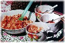

|
|
| SCD – diæt og autisme |
 |
I 2004 modtog SCDiet.org en henvendelse fra en mor, som fortalte, at hendes to børn i alderen syv og otte år begge havde autisme og at de havde fulgt Specifikke Kulhydrater Diæten (SCD) siden august 2003. Hun skrev blandt andet:
“Jeg har selv altid undret mig over, hvorfor mine børn altid har haft enten diarré eller forstoppelse. Gang på gang har jeg nævnt det over for de læger, jeg har talt med. Men det blev aldrig set som et problem.
Jeg er ikke i tvivl, om at denne diæt hjælper mine børn.”
Nedenfor kan du læse dels en pressemeddelse, som Carol Frilegh udsendte i USA i november 2003, dels en oversættelse af et brev fra Jen Young, hvis søn har autisme.
Fra: Carol Frilegh <c.frilegh@sympatico.ca>
Dato: Man. Nov 10, 2003 09:04:10 AM US/Eastern
Til: Carol Frilegh <c.frilegh@sympatico.ca>
Emne: Test pressemeddelelse
‘Slip sommerfuglene fri’ – SCD, en diæt der griber ind overfor autisme.
SCD er en 50 år gammel diæt, anvendt af voksne til at bekæmpe sygdomme i mave/tarmkanalen. Denne diæt har vist sig at have en bemærkelsesværdig virkning på en gruppe autistiske børn, som følger den netop nu (2003).
Den specifikke kulhydratdiæt (SCD) indskrænker men udelukker ikke kulhydrater. Det er ikke en lavkulhydrat diæt, og den har ikke noget at gøre med vægtkontrol.
Der er for øjeblikket over 500 forældre tilsluttet en online støttegruppe for diæten, www.pecanbread.com. Diæten og teorierne kan læses i Elaine Gottschalls bog “Breaking the Vicious Cycle” (oversat til dansk af Lotte Wackerhagen, “Bryd den Onde Cyklus”). 10. udgave af bogen kommer på markedet i begyndelsen af 2004 og indeholder et nyt kapitel om autisme og diæten.
SCD udelukker en kategori af kulhydrater, der er vanskelige at fordøje. Der er en stærk forbindelse mellem hjerne og tarm, og det viser sig, at en formindskelse af en for stærk bakterievækst i tarmen genopretter de kognitive evner ved mange af de børn, der følger den specielle version af diæten mod autisme, Attention Deficit Disorder (ADD) og Attention Deficit Hyperacticity Disorder – herhjemme også kaldet DAMP.
Elaine Gottschall, en 82-årig biokemiker, har arbejdet for at fremme denne diæt. Hun har gennem 45 år videreført sine studier om fødens indvirkning på fordøjelseskanalen og dens indvirkning på opførsel. Diæten blev udviklet af Dr. Sydney Valentine Haas og hans søn, Dr. Merrill P. Haas, men det var Elaine Gottschall, der videreførte og fortsatte med at tale om hjerne-tarm forbindelsen.
Autisme Foreningen af forældre og læger (i USA) har længe støttet andre metoder, men i lyset af det stigende antal succeser, man hører om ved anvendelse af SCD-diæten, er der flere, der nu bliver opmærksom på den. Elaine Gottschall er således blevet inviteret til at deltage som en af de højt ansete internationale talere ved Autism One Conference, som finder sted i Chicago i maj 2004.
Forældre og lærere til autistiske børn rapporterer om børnenes ændrede holdning, fremskridt i færdigheder og forståelse – i nogle tilfælde kun efter få uger på diæten. Skønt der ikke har været gennemført egentlige langtids kontroller, bekræfter disse talrige førstehånds rapporter det potentiale, denne diæt indeholder for børn på det autistiske spektrum.
Diæten har hjulpet mange voksne, der lider af Crohns sygdom, Ulcerativ Colitis, IBD og Cøliaki
Ny research viser, at flere end 50 procent af autistiske børn har sygdomme i mave/tarmkanalen, fødevarerallergier og problemer med dårlig fordøjelse og dårlig optagelse af føden i tarmen.
Gluten overfølsomhed og intolerance over for salicylater er symptomer på et ødelagt fordøjelsessystem, overgroet med sygdom i tarmen. Når tarmen er helbredt, forsvinder disse symptomer. Det er bedre at kurere årsagen, der ligger til grund for sygdommen, end blot at prøve på at behandle symptomerne. Vi anser derfor den specifikke kulhydratdiæt (SCD) som det optimale valg for et barn med autisme, fordi SCD når til roden af årsagen til problemerne ved at helbrede fordøjelsessystemet.
Som en mor har sagt: “når du ser dit barns sande jeg dukke op, med sin egen personlighed, som en sommerfugl, der bryder ud af sin puppe, – ja, så ved du, at det har været hele besværet værd.”
Website for den voksne version af diæten:
breakingtheviciouscycle.info
Website for autisme:
www.pecanbread.com
Elaine Gottschall bor i Grafton, Ontario, Canada
Yderligere oplysninger:
Carol Frilegh
Telefon: (+1) 416 922 0538
c.frilegh@sympatico.ca
Fra Jen Young.
Jeg mangler ord for at beskrive det mirakel, denne diæt har udrettet. Den har givet mig min søn tilbage på en måde, som jeg ikke troede var mulig. Elaine Gottschalls diæt har helbredt min søns autisme og kureret hans sygdom i mave/tarmkanalen, som han kæmpede mod i tre år.
Min søn, Colin (fire år gammel), har lidt af sygdom i mave/tarmkanalen, siden han var 11 måneder gammel. Han havde Rota virus, kronisk diarre, han fik konstant steroider og antibiotika (for øre og lungeinfektioner). Da han var to et halvt år gammel var der terror hver nat. Da han var tre år gammel blev han betegnet som “fejlernæret” på grund af hans lave vægt og højde. Han blev ligeledes diagnosticeret med “udviklingsforstyrrelse (Udbredt udviklings forstyrrelse, det vil sige autisme). Han var bagud i tale og motorik. Han bankede ind i ting med sit hoved og holdt op med at se på mig. Min søn forsvandt bort fra mig.
Alle havde svaret for os. De etablerede læger (neurologer) ville give ham medicin. Mave/tarm-lægerne mente, at Colin havde autistisk diarre og ville ikke hjælpe os. De ville end ikke foretage en coloscopi (kikkertundersøgelse af tarmen) på et barn, som havde kæmpet mod sygdom i mave/tarm-kanalen i årevis.
De alternative læger rådede os til at undgå gluten og mælk og bruge høje doser af vitaminer. Da vi gav Colin glutenfri mad, standsede den natlige terror – men hans kroniske diarre og den forsinkede udvikling fortsatte. Faktisk blev Colins symptomer værre, da jeg gik over til glutenfri kost og udvidede med ny stivelsesholdig mad.
Da min søn fik betegnelsen ?højt fungerende autist? i en alder af tre et halvt år, følte jeg, at Gud sagde til mig ?Colin er vigtigere end alt andet?. Jeg sagde mit job op for at redde min søn. Jeg besluttede, at jeg i stedet for at lytte til ?eksperter? i autisme, ville lytte til min søn. Jeg vidste, at han havde svarene inde i sig – og jeg gav mig til at undersøge og studere ham.
Jeg har altid vidst, at Colin havde et problem med kosten. Hans bizarre stærke lyst til mælk, ost og brød var blevet erstattet af en stærk trang til glutenfri vafler, kartofler og alle former for stivelsesprodukter og sammensatte sukkerprodukter. Nogle fortalte mig, at han var allergisk over for disse fødevarer. Men jeg vidste, at han umuligt kunne have 30 forskellige allergier. Jeg vidste også, at hvis føden var hans problem – så måtte det også være svaret.
Jeg konkluderede, at min søn ikke var autist, men i stedet en dreng med Cøliaki (glutenallergi) eller en anden mave/tarmkanal forstyrrelse. Men så, takket være en tidligere kollega, som var en person med cøliaki, der ikke var blevet kureret af at leve glutenfri, fandt jeg frem til Elaine Gottschalls bog.
Inden for måneder på Elaine Gottschalls diæt, blev min søns afføring normal for første gang i hans liv! Så startede han med at lege indviklede lege, han så på os, og han gjorde fremskridt på alle områder. Han legede rigtigt med sit legetøj. Han gav stemme til sine ønsker, behov og han stillede spørgsmål.
.
Åh, disse pragtfulde hvorfor-spørgsmål! Colin begydte at spørge mig om Gud, om livet, om årstiderne. Han spurgte mig, hvorfor hans mave altid havde været syg. Hans lærere var forbavsede. Hele familien var forbavset. Vi vidste, at diæten havde reddet ham. Vi så det ske for øjnene af os. Ingen medicin, ingen dyr adfærdsterapi. Kun diæt.
Så giv ikke op.
Da Colin ikke kunne fordøje frugter og grøntsager, kogte vi dem. Da han ikke kunne spise mandelmel – så gav vi ham squash og bananer som kulhydrater indtil han var parat til nøddemel. Vi lavede ikke yoghurt til ham i begyndelsen, som beskrevet i bogen, fordi Colin får astma, når han drikker mælk. Men så startede vi med at bruge gedemælk til yoghurt i stedet for, så han kunne få de gode bakterier, som han havde behov for. Hvis man virkelig ønsker at blive rask, så er der altid en vej. Men man skal tro på det og man skal være tålmodig.
I dag er min søn sund og rask. Han har taget 8 pounds på og er vokset med 5 inches på mindre end et år. Han strutter af sundhed. Han har normal afføring. Han har en vidunderlig appetit. Og han har indhentet sine jævnaldrende på næsten alle områder. Han har venner! Næste år begynder han i almindelig skole. Nogle læger og andre spørger os nu, om vi har “byttet” barn.
Alt dette på grund af kosten.
Forleden fortalte jeg Colin, at jeg skulle hjælpe en ven med opstart af diæten. Jeg forklarede ham om yoghurt, mandelmel osv. Colin sagde: ?Mor, tak? og lagde sine arme om mig. Jeg sagde: ?For hvad?? ?For mig, mor. Tak fordi du har gjort min mave rask.?
Selv Colin kender denne diæts kraft og styrke.
Gud velsigne Elaine Gottschall fordi hun kæmper for os alle og fordi hun hjalp mig med at redde min søn.
• A Diet to Satiate the Brain and Calm the Tummy: Benefits of the Specific Carbohydrate Diet
www.cnsfoundation.org/newsletter/newsletter_70/newsletter_02.html
----- Original Message -----
From: "Gay B."
Sent: Monday, January 24, 2005 7:08 PM
Subject: Pam and Mik and Ulla/Gay: SCD NEWS
On January 27, Elaine will broadcast for AutismOne Radio. The broadcast is scheduled for 8:00 pm to 8:20 EST but can be accessed then or anytime after by going to
http://www.autismone.org/radio/default.cfm?radio=schedule
By clicking on Elaine's time slot, the program (if all goes correctly)
will come through loud and clear.
Loving Care
|
|
Denne danske del af SCD websitet vedligeholdes af: Mik Aidt.
Senest opdateret: 14. januar 2004
|
 |
|